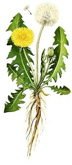
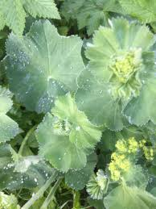
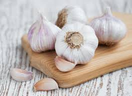

Dandelion
The leaves are used to stimulate the appetite and help digestion. Dandelion flower has antioxidant properties. Dandelion may also help improve the immune system . Herbalists use dandelion root to detoxify the liver and gallbladder, and dandelion leaves to help kidney function. Dandelions contain beta-carotene, which is an antioxidant that helps protect cells from damage. Research shows that carotenoids such as beta-carotene play a vital role in reducing cell damage. The flower of the dandelion is also full of flavonoids and polyphenols, which are other types of antioxidants. Dandelions have amazing skin care benefits: They're rich in antioxidants, have anti-aging qualities, and can help protect the skin against UV damage. Dandelions may get overlooked for more trendy or exotic herbs, but this humble weed has incredible therapeutic benefits and, best of all, they're completely free.
Dandelion greens turn bitter and woody quite quickly, so very early spring is the best time to harvest them. To harvest and eat dandelions, try to clip the small leaves from the plant before the plant flowers.
Cumin

Nutrition. Cumin contains compounds called flavonoids that work as antioxidants in the body. Antioxidants can help neutralize unstable particles called free radicals that cause cell damage. By neutralizing these particles, antioxidants can help prevent diseases like cancer, heart disease, and high blood pressure. Using cumin as a spice increases antioxidant intake, promotes digestion, provides iron, may improve blood sugar control and may reduce food-borne illnesses. Taking higher doses in supplement form has been linked to weight loss and improved blood cholesterol, though more research is needed. For generations, people have used cumin to treat conditions ranging from indigestion and diarrhea to headaches. People in India have used it to treat kidney and bladder stones, eye disease, and even leprosy. Now, scientific research is finding evidence that backs up many of these traditional uses. What cumin does for stomach? Improved digestion cumin contains antioxidants that enhance digestion, reducing gas and acidity. Jeera or cumin seeds are a rich source of iron and help to strengthen energy postpartum. Consumption of whole cumin seeds stimulates milk production. You can soak some cumin seeds in a glass of water and drink it early in the morning to improve lactation.
Lady's mantle
It is high in antioxidants and can help fight flu symptoms. Lady's Mantle is commonly used to prevent and treat menstrual cramps, excessive menstrual bleeding and to promote normal digestion. Not recommended for use during the early stages of pregnancy. Naturally caffeine free. It is rich in antioxidants that have an anti-inflammatory effect and strengthen the immune system. Additionally, lady's mantle tea can help regulate the menstrual cycle and reduce menstrual pain. This tea can also provide relief from stomach complaints, intestinal problems and urinary tract infections. The ability of Lady's Mantle to stimulate progesterone production can keep these important hormones in balance which can help to alleviate a wide range of symptoms that are commonly associated with the menopause. When applied externally in a hip bath, it is effective in treating discharge and itching. Lady's mantle also makes breasts less sensitive to touch, softens indurations and speeds up the healing process in case of breast cancer. Lady's mantle has been traditionally used to mend and connect torn tissues making it specifically helpful in conditions such as torn eardrums, hernias, muscles, tooth extractions and general wounds. Lady's mantle is also thought to have some nervine properties and has been used by herbalists for insomnia & anxiety.
Garlic
Garlic contains prebiotics, a type of fiber that feeds good gut bacteria. So if you are suffering from an imbalance of bacteria in the gut microbiome, know that garlic works as both an antibiotic (killing off hostile bacteria) and a prebiotic (feeding good bacteria). Research has shown that garlic increases the good Bifidobacterium in our gut, which may help prevent some gastrointestinal diseases and irregularity. Garlic has long been associated with health benefits – from curing a cold to lowering blood pressure and cholesterol levels. Garlic contains vitamins C and B6, manganese and selenium, but it's a chemical called allicin, a type of antioxidant, which is thought to be responsible for its positive effects. It's been shown to work as an antibiotic, antioxidant, antibacterial, antifungal, and antihistamine medical agent. And what do all those things mean exactly? They translate to fighting a variety of ailments like the common cold, fungal infections, allergies, and cancer among other things. Garlic – In addition to supporting your heart and circulation, garlic has antibacterial, ant-parasitic and antiviral compounds that help remove toxins, parasites and pathogens from the colon. How long do you need to take garlic extract to start experiencing its benefits? Since some of the beneficial compounds in garlic extract are fat-soluble, it may take 1-2 weeks for this substance to deliver noticeable effects.